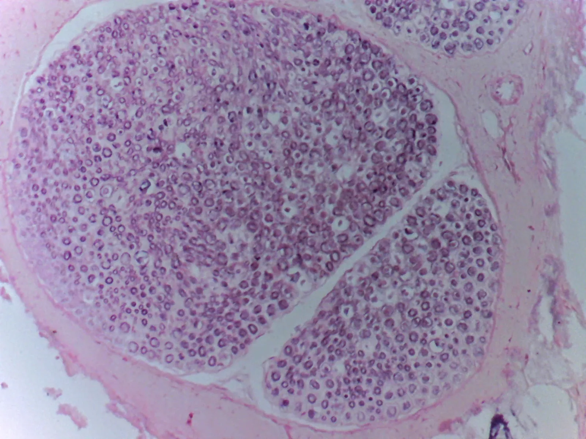
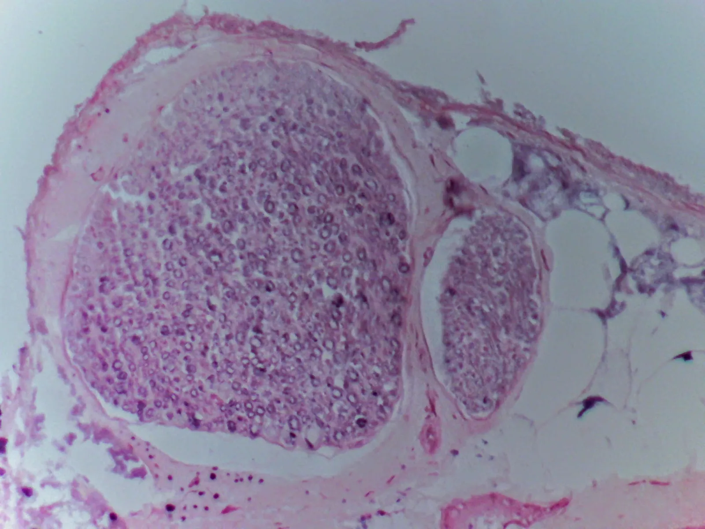
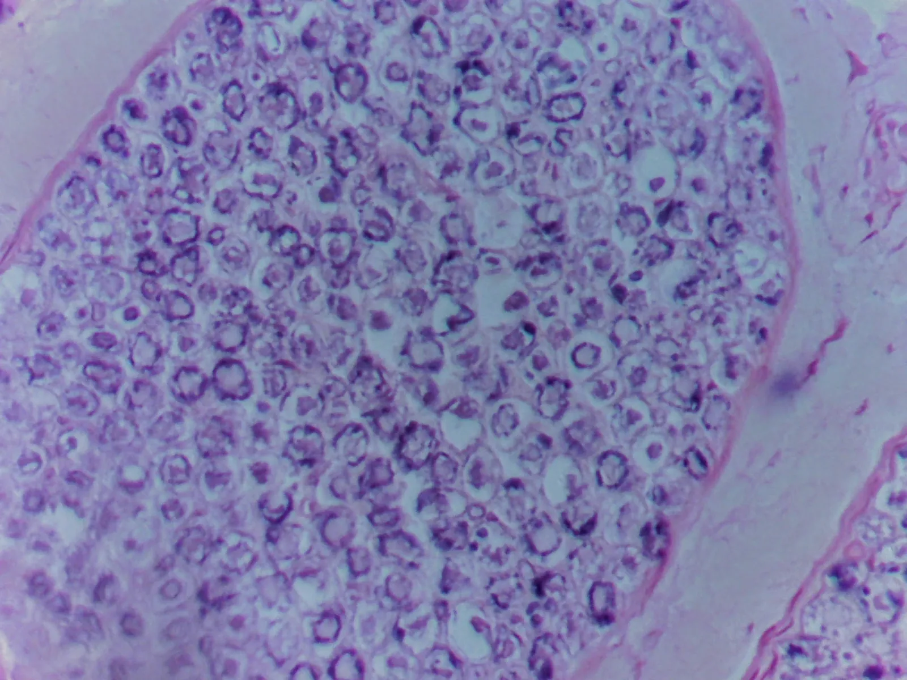

Lâmina 31 · Tecido nervoso
Nervo (corte transversal)



Toque na imagem para ampliar. No computador, use as setas do teclado para trocar de imagem.
Lâmina 31 · Tecido nervoso



Toque na imagem para ampliar. No computador, use as setas do teclado para trocar de imagem.